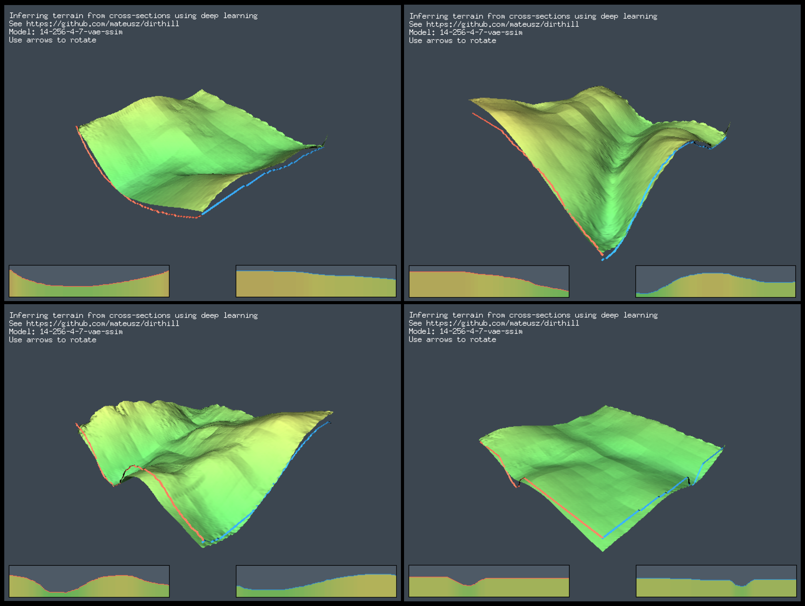

dirthill turns two hand-drawn elevation profiles into a 128 × 128 heightfield. You sketch the skyline along two adjacent edges of a square patch of ground; a convolutional network invents everything inside, and a software 3D renderer shows you the hill 200 ms later.
The whole thing runs client-side. A PyTorch model is exported to ONNX, executed by onnxruntime-web, and driven by a UI compiled from Go to WebAssembly — 2D drawing surfaces via Ebiten, the 3D terrain via Tetra3D’s software rasteriser. There is no backend, no API key and no telemetry: the page downloads a model and does the inference in the tab.
The training data is real ground. Every model was fitted on 1-metre USGS lidar elevation of the Rogue River–Siskiyou National Forest in southern Oregon, so what the network has learned is the specific grammar of one landscape: how ridges taper, how gullies converge, and — the most striking emergent behaviour in the whole project — where water would run.

Four inferences from the shipped VAE model (14-256-4-7). The red and blue lines are the drawn input, standing up in the scene as ribbons; everything else is the network’s guess. Note the second panel: two profiles that both slope down toward a shared corner produce a convergent drainage, not a smooth ramp.
The shape of the problem
Framed plainly, this is conditional generation of a 2D field from a 1D boundary condition. That framing has two consequences that drove the entire three months of work:
The task is radically underdetermined. 256 input numbers, 16 384 output numbers. Countless terrains satisfy any given pair of edges, so a network trained to minimise squared error will hedge toward the average of all of them, which is a smooth featureless ramp. Almost every experiment below is a different attempt to stop the model hedging.
Loss and quality come apart. The best test loss and the best-looking terrain were repeatedly different checkpoints. The project's answer was a hand-run qualitative check-sheet — river, camel, V-valley, hill, hole, noise, counter-edge — applied to every candidate, with the numbers used only as a coarse filter.
On the numbers in this write-up. Every loss figure here is quoted from the author’s own comments in the scripts. They are comparable within a script and not much beyond it: the normalisation changed (raw metres in 01–05 and 08–12, per-tile [-1,1] from 06 onward), the objective changed (MSE → Huber → MAE+SSIM+KLD), the dataset grew from 20k to 600k tiles, and the held-out file changed twice. Read them as a trail, not a leaderboard.
The data
One kind of file, sliced very finely: USGS 1-metre lidar digital elevation models, cut into overlapping 128-pixel squares.
Source
The rasters are USGS 3DEP 1-metre DEM GeoTIFFs, pulled from the ScienceBase catalogue entry cited in 18_skips.py. Filenames carry their own provenance:
Tile origin in kilometres — each file is a 10 km square, 10 000 × 10 000 pixels
OR_RogueSiskiyouNF_2019
Collection project: Rogue River–Siskiyou National Forest, Oregon, 2019
B19
Delivery batch
Ten adjacent Rogue–Siskiyou tiles were used for training, with x50y466 held back as the test file (referred to as test3 in the later logs, after two earlier choices). Files are opened with rasterio, band 1 read as a NumPy array of elevations in metres; nodata arrives as a large negative sentinel, so anything below −10 000 marks a hole.
There were excursions elsewhere — Carr–Hirz–Delta Fires and Alameda County and Southern Sierra in California, McKenzie River in Oregon, Pierce County and Eastern Cascades in Washington — all still listed, commented out, in terrain_set2.py and 06_train_conv.py. Mixing regions made the output worse, not better: the model averaged across incompatible landscapes and went flat. The project retreated to a single forest and stayed there.
From raster to training pair
01_load.py is pure reconnaissance — open a file, histogram it, hillshade it with matplotlib’s LightSource, and plot 512-pixel squares as 3D surfaces to see what a training sample actually looks like. Everything after that is mechanised in two Dataset classes, terrain_set.py and its successor terrain_set2.py.
The sampling pipeline in terrain_set2.py. Two decisions here shape everything downstream. max_pool2d is a max, not a mean, so downsampling keeps ridge crests and quietly erases narrow gullies. And a stride of 8 against a window of 128 means adjacent samples overlap by 94% — enormously more training pairs, at the cost discussed under next steps.
terrain_set.py — the first version
Elevations stay in metres, offset either by the whole raster’s minimum (global_norm) or by each tile’s own floor (local_norm). Flags select what the boundary is: all four edges walked as an ordered loop, a single column, or two edges; and whether the target is the full square or just the interior (n-2)², since 04_train_complete_bound.py predicts only the pixels the boundary doesn’t already give it.
terrain_set2.py — the one that stuck
Three changes, all of which mattered:
Multiple files in one dataset, indexed together as (file, x, y) rows in a pandas frame.
Per-tile normalisation to [-1, 1] — each tile is rescaled by its own min and half-range. The model therefore never sees absolute elevation and only ever learns shape. This is also exactly what makes the interactive demo possible: whatever range the user draws in becomes the tile’s range.
Boredom rejection. A tile whose total relief is under min_elev_diff (10 m, later 20 m) is dropped. Flat ground is abundant, trivially predictable, and drags the model toward flatness.
How a boundary becomes 256 numbers
The dataset always emits the full 512-value loop around the tile. The training scripts then take inputs[:, 0:boundl] — the first 128 values for a one-edge model, the first 256 for a two-edge model. Which specific edges those are is worth being precise about, because it determines what the demo asks the user to draw.
The boundary is one closed walk, but only half of it is used.terrain_set2 concatenates d[:,0], d[-1,:], flip(d[:,-1]), flip(d[0,:]) — down the left, right along the bottom, up the right, back along the top. Slicing the first 256 therefore yields the two edges that meet at the near corner, which is why the demo shows two adjacent drawing canvases rather than four. The far edges become the model’s output, and their quality is the “counter-edge test” that decides whether tiles could ever be chained together.
History, 01 → 18
Eighteen numbered scripts over seven weeks. Odd numbers are mostly test harnesses, even numbers mostly training runs, and the interesting material is in the comment blocks at the bottom of each file, where every run’s losses and verdict were recorded by hand.
0112 Feb
Look at the ground first
01_load.py
Open one GeoTIFF, find its true minimum by masking the nodata sentinel, and subtract it. Histogram a 128-pixel patch. Hillshade it with matplotlib’s LightSource at azimuth 270°, elevation 45°. Then loop over 512-pixel squares at stride 128 and plot each as a 3D surface, skipping any square containing a hole.
No model, no training — just building an eye for what one training sample looks like, and confirming that a few hundred metres of forest contains genuinely interesting structure at this resolution.
0212 Feb
The simplest thing: one hidden layer
02_train.py · 03_test copy.py
Boundary vector → Linear(1024) → ReLU → Dropout(0.5) → Linear(16384) → ReLU → reshape. MSE, Adam on defaults, early stopping with patience 3, best checkpoint saved by validation loss. Test MSE came out at 108 with one edge and 54 with two — the second edge halves the error, which is the first evidence that more boundary genuinely constrains the interior.
Two lasting artefacts appear here. The first is the monkey-patch: PyTorch’s nn.Unflatten would not export to ONNX cleanly (pytorch#49538), so a hand-written View module is assigned over nn.Unflatten globally. That four-line hack is copied into every subsequent script and is the reason any of this reached a browser.
The second is 03_test’s viewer: truth and prediction side by side, each rendered twice from opposite azimuths, with the input profiles overdrawn in red and purple. Underneath it grows a hand-kept index of interesting tiles — 5200 saddle, 5300 island, 5500 multiple rivers — which gets pasted into every test script from here on. It is the project’s real evaluation set.
0412 Feb
All four edges, and the dropout discovery
04_train_complete_bound.py · 05_test.py
Feed the whole boundary loop (4 × 128 = 512 values) and predict only the interior 126 × 126, since the border pixels are given. A plain stack of dense layers, swept by hand. The comment block at the top of the file is the first proper experiment log:
128→4096, 0.2 = vl 80, overfit
128→4096, 0.0 = vl 5.5 and it learned the texture!
128→1024→2048→8192, 0 = vl 3.50, smooth, but produces nontrivial shapes, but still no sharp corners
04_train_complete_bound.py
This is the pivotal early finding, and it is counter-intuitive: removing dropout entirely made the model learn terrain texture. Dropout was averaging away exactly the high-frequency detail that makes terrain look like terrain. The tension it opens — regularise and go smooth, or don’t and go noisy — is never fully resolved and reappears in every architecture that follows.
0614 Feb
Convolutions, and the rivers
06_train_conv.py · 07_test.py
The architecture that carried the project. A 1D convolutional encoder reads the boundary as a signal — six blocks of Conv1d(3) → BatchNorm → ReLU → MaxPool(2), channels 16 → 512 — flattens to a 512-unit bottleneck, then a mirror of six ConvTranspose2d layers inflates a (512, 2, 2) block up to 128 × 128. Loss switched from MSE to Huber with δ = 0.25.
The results were the first that felt alive. From the log: the early single-file models “are able to simulate rivers — how the water flows from high to low ground. Up to two rivers per side.” Nobody asked for hydrology; drainage networks are simply what minimises error on real lidar.
Then a long, careful investigation of a problem that is really about information capacity:
The idea here I think is that the normalised boundary of 256 can only represent a limited amount of squares. If too many squares are in the training set, system starts to average things out. We do want to capture some of the input idiosyncracies, so the set has to be curbed either via upscaling, or by sampling.
06_train_conv.py
Scaling the dataset from 20k to 600k tiles made outputs flatter, not better, until capacity and regularisation were re-tuned to match. The resolution — recorded as a working rule — was to prototype architectures on the small dataset with a wide bottleneck and heavy dropout, then re-fit the winner on the large dataset with dropout removed.
One more line in this file is pure production wisdom, sitting next to a Dropout(0.1):
# This prevents instability in UI usage (otherwise single value changes blow up the output!)
06_train_conv.py
A model with no dropout scored better on held-out data and was unusable interactively, because nudging one pixel of a drawn profile could change the whole hill. A small amount of dropout buys smoothness with respect to the input — which is a property no metric in the project measured, and which decided what shipped.
A change of plan. Instead of mapping edges straight to terrain, first train a 2D convolutional autoencoder on the tiles themselves — six down, 256-unit latent, six up — to learn a general prior for “what terrain looks like”. Then only a small network needs to learn edges → latent. Checkpoints are named by their loss: 08-full-ae-vl1.36, later 08-full-ae-vl0.63.
10 and 10b are the most exploratory files in the repository, and they establish that the prior is real:
Denoising. Add three sigma of Gaussian noise to a tile; the autoencoder still reconstructs recognisable terrain.
Inpainting. Replace a tile with random values but keep every second pixel; it reconstructs. This matters for later ideas — sparse interior constraints are clearly learnable.
Latent forensics. Embed the whole dataset, save to parquet, PCA to 50 dimensions, t-SNE to 2, plus per-dimension histograms and a seaborn heatmap of the raw 256 channels, and a straight count_nonzero sparsity check. The ReLU latent turns out sparse and strictly positive, concentrated in a handful of channels.
1116 Feb
Bolting the boundary onto a frozen decoder
11_bound_ae.py · 12_test.py
Load the autoencoder, slice off the decoder, freeze every parameter, and train Linear(256→1024) → Linear(1024→256) in front of it. Test MSE: 46 with two edges, 98 with one.
Against 02’s dense baseline of 54 that is barely a win, and the reason is visible in 10b’s latent histograms: regressing into a sparse, strictly-positive, ReLU-shaped latent code is an awkward target, and the frozen decoder can only be reached through it. The commit message is honest — “ff-through-ae decoder, loss around 20, but different shapes”. The two-stage idea is not abandoned, though; it comes back variationally in 15–16.
1318 Feb
Export, and the browser
13_onnx.py · cubetest/ · surfacetest/ · ui/
13_onnx.py is a bench for pushing checkpoints through torch.onnx.export with named inputs (edge) and outputs (tile) — the names the JavaScript later binds to. Because ONNX export needs the module definitions in scope, the file also carries verbatim copies of the model classes, which makes it a useful snapshot of every architecture in flight at once.
Alongside it, three Go directories appear over four days. cubetest/ loads a glTF cube to prove Tetra3D renders in WASM at all. surfacetest/ builds a 128 × 128 vertex mesh from a sine function to prove a heightfield of that size is tractable in a software rasteriser. Then ui/ becomes the real thing, with commits titled “try productionising”, “plug together”, “two edges”, “fix up colors”.
1422 Feb
The VAE, and the loss becomes the experiment
14_vae.py
The same Conv1d encoder as 06, but the bottleneck splits into two heads — μ and log σ², each Linear → ReLU → Linear at 512 dimensions — sampled by the reparameterisation trick and fed to the same transposed-convolution decoder. The forward pass returns (output, mu, logvar, z).
From here the architecture barely changes and the objective becomes the object of study. The final recipe is a weighted sum of three terms doing three different jobs:
1.0 × (1 − SSIM) — structural similarity, borrowed from image quality assessment via pytorch_msssim. This is what produces plausible texture instead of a smooth average.
0.1 × MAE — a deliberately small pixel term, just enough to keep the surface anchored to the drawn edges. Removing it entirely gave the best test loss in the whole file and a model that failed the qualitative checks.
KL divergence, annealed 1e−6 → 1e−5 → 1e−4 across the first epochs. Too much and everything goes smooth; too little and the latent stops being usable.
Fifteen variants are logged with their verdicts, and the recurring observation is that loss and quality diverged:
latent=512 … loss looks bad BUT got the interesting terrain shapes again as with initial ssim
14_vae.py
Which forced the checklist that closes the file — the project’s actual acceptance criteria, written as a to-do:
# notes for check-sheet:
# river test (far and near)
# camel test
# v-shaped valleys / and \
# hill
# hole
# noise
# counter-edge test
14_vae.py
The stated conclusion — 0.1·MAE + 1.0·SSIM + 1e-4·KLD at latent 512 — is what runs on the live page today. This script also starts exporting to ONNX inside the training loop, on every improved epoch, straight into ui/dist/, so the demo always pointed at the current best checkpoint.
15 trains a full 2D VAE on tiles — the 08 autoencoder with μ/σ heads and KL annealed 0 → 0.5 → 1.0. 16 then repeats the 11 experiment against it: freeze the variational decoder, train a small dense network from the boundary into the latent. Commit messages track the struggle to make it converge — “vae start”, “tweak vae with annealing to converge”, “remove instability”, “finishing up with vae, boundl=128”.
17 answers the question that 11 raised, by drawing the variational latent the same way 10b drew the plain one. The VAE’s latent is dense and centred on zero, where the autoencoder’s was sparse and one-sided — a far friendlier regression target. The end-to-end VAE of 14 nonetheless won, so the frozen-decoder line stops here.
—28 Feb – 6 Mar
Interlude: making it a thing you can play with
ui/main.go
A week of UI work, and the commit titles read like someone enjoying themselves: “06 is getting interesting”, then “06 seems even better - simulating rivers”. Substantive changes: a water level so anything below a threshold flattens to a blue plane; “shift output to zero”, so the terrain always rests on the floor regardless of what the network predicts; experimental touch support with a longer debounce for mobile; the two drawn profiles promoted to independent 3D ribbons in the scene; and arrow-key camera orbit.
1810 Mar – 24 Mar
A U-Net, a dimensional mismatch, and a bug
18_skips.py
The most ambitious script, and the one with the most instructive failure. The idea is standard: give the encoder–decoder skip connections so fine detail from the input can bypass the bottleneck. The obstacle is not standard at all — the encoder’s features are 1D, shape (C, L), and the decoder needs 2D, shape (C, H, W). There is no conventional way to connect them.
The solution invented here is to split each 1D feature vector in half, treat the halves as an x-profile and a y-profile, and take their outer product in log space:
The 1D → 2D skip lift from 18_skips.py. Because log(exp(a) × exp(b)) = a + b, the einsum builds a field whose value at (i, j) is sx[i] + sy[j]. That is elegant and cheap, and it is also strictly separable: every skipped feature map is rank one and axis-aligned. The observed symptom matched exactly — enabling skips gave outputs the log describes as “interesting, but square”.
The first fortnight of results was bad. Small datasets overfit hard (validation 0.0022 against test 0.0852); thinner and deeper variants got stuck around 0.05; ten-file runs “converge very slowly and seem stuck”. The file records the moment of surrender, and then, three lines later, the recovery:
# I think this is a lost cause :) Move on!
#
# Ok, tried matching this architecture with 06, and it does converge, so I must have done something wrong.
# Could be that nn.ConvTranspose2d(1,1,1) at the end. Refactor.
18_skips.py
It was a bug, not the architecture. Reproducing 06’s configuration inside 18’s code was the diagnostic that proved it — if a known-good architecture fails to converge in your new harness, the harness is wrong. The fixes: replace the final transposed convolution with a plain 1 × 1 Conv2d channel squash with no activation, as U-Net does; drop a redundant decoder block inside the bottleneck; upscale from the bottleneck with a dense layer rather than a convolution.
After the fix, like-for-like parity with 06 was restored (validation 0.0079, test 0.0513) and the comparison finally became meaningful. The verdict: skips off was the better model. With skips disabled the output was “very smooth and fits edges well, could be good for tiled gen, stable”; with skips enabled it scored slightly better on validation and looked square and unstable. A 33 MB skip-free variant shipped as 18-256-4.
The last line of the file, and effectively the last line of the project, is the sharpest observation in it:
# todo: produce strided variants AFTER val split?
18_skips.py
With a window of 128 and a stride of 8, a random train/validation split puts near-duplicate tiles on both sides of it. Validation loss sat around 0.007 while held-out-file loss sat around 0.05 — a sevenfold gap that is mostly leakage, and which quietly undermines every model-selection decision made by validation number across all eighteen scripts. It is the right thing to have noticed, and it was noticed last.
Approaches & results
Six families of model were tried against the same task. The bottleneck moved, the loss changed, the dataset grew by thirty times — but the winning shape stayed the one found on day six: convolve the boundary down, inflate a 2D field back up.
The same spine, six middles. Only 04 changes the interface (four edges in, interior out); everything else takes 256 boundary values and returns a full 128² tile. Highlighted in red is the encoder/decoder pair introduced in 06 and reused unchanged by 14 and 18; in green, the variational bottleneck that runs on the live page. The dashed frozen decoder is the two-stage idea that was tried twice and dropped twice.
Dense baselines — 02, 04, 11, 16
All figures are MSE on locally-normalised elevations in metres, so they are on the order of squared metres and are not comparable to anything from 06 onward.
Dense and frozen-decoder models. Held-out losses are from 03_test and 12_test.
Script
Configuration
Val
Test
Verdict
02
1024 wide, dropout 0.5, one edge
—
108
Blobby; establishes the baseline
superseded
02
1024 wide, dropout 0.5, two edges
—
54
Second edge halves the error
informative
04
128→4096, dropout 0.2
80
—
Overfit
no
04
128→4096, no dropout
5.5
—
“and it learned the texture!”
key result
04
128→1024→2048→8192, no dropout
3.50
—
Nontrivial shapes, no sharp corners
best dense
11
boundary → frozen AE decoder, two edges
—
46
Barely beats 02; sparse ReLU latent is a poor target
dropped
16
boundary → frozen VAE decoder
—
—
Denser latent, easier to hit; still lost to end-to-end 14
dropped
Convolutional — 06
Now on per-tile [-1, 1] normalisation, so losses are three orders of magnitude smaller. The dataset-size story is the point of this table: every attempt to buy quality with more data cost detail until the bottleneck and dropout were re-tuned to match.
Selected runs from the log in 06_train_conv.py. The held-out file changed twice during this sequence, so compare test figures within contiguous groups only. ÷n is the max_pool2d factor.
Tiles
Configuration
Val
Test
Note
20k
latent 1024, dropout 0.5, ÷4
0.0085
0.1168
25 MB. The model that simulates rivers
landmark
100k
latent 1024, dropout 0.5, ÷10, batch 32
0.0275
0.0854
—
no
250k
latent 2048, dropout 0.75, ÷6, batch 32
0.0183
0.0587
“kind of ok”
no
500k
latent 4096, dropout 0.875, ÷4, batch 32
0.0309
0.0525
“But effect is boring”
no
600k
latent 2048, dropout 0.85, ÷4, batch 32
0.0305
0.0439
“too flat” — best test number, worst output
no
600k
latent 512, no dropout, ÷4, batch 32
0.0160
0.0523
Good edge matching; square artefacts and spikes
breakthrough
600k
as above, + Huber δ 0.25
0.0076
0.0526
“ok but quite spiky”
no
600k
as above, + dropout 0.1, batch 64
0.0085
0.0488
Dropout back, for input stability not accuracy
good
600k
as above, + dropout 0.1, batch 128
0.0087
0.0499
“good stuff”
shipped
Variational — 14
Architecture held fixed; the loss weights swept. Values are the composite objective, with the MAE term (crit) and the SSIM term (perc) tracked separately in the original log. The final row of this table is the model on the live page.
The loss study in 14_vae.py. Every objective includes annealed KL divergence at 1e−4 unless noted.
Latent
Objective
Val
Test
Verdict, verbatim where quoted
2048
MAE + SSIM
—
0.1495
“interesting result with cool shapes, and clear rivers”
promising
256
Huber 0.25 + SSIM
0.0499
0.1482
“smooth and uninteresting”
no
512
MAE + SSIM
0.1134
0.2992
“loss looks bad BUT got the interesting terrain shapes”
promising
512
MAE only
0.0738
0.1719
“Similarly good rivers, but very jagged”
no
768
MAE + SSIM
0.1076
0.2962
“too many wrinkles!”
no
512
MAE + SSIM, KL ×10
0.2279
0.3152
“Nah, too smooth again”
no
512
0.25·MAE + SSIM
0.0670
0.1704
“nice! rivers are there, pretty smooth, responds to camel test”
good
512
SSIM only, no MAE
0.0473
0.1256
Best loss in the file — “fails camel test”
no
256
0.1·MAE + SSIM
0.0527
0.1423
“alright, but a bit unstable”
no
512
0.1·MAE + SSIM
0.0588
0.1409
“seems even better” — the stated conclusion of the file
live
The clearest single lesson in the project. Two rows above sit next to each other: SSIM-only scores the best held-out loss (0.1256) and fails the qualitative checks; adding back a tenth of a unit of MAE makes the loss worse (0.1409) and the model shippable. Pixel error measures agreement with one ground truth. For an underdetermined task that is the wrong question, and a structural term plus a light pixel anchor is a better proxy for “is this a hillside”.
U-Net-like — 18
Runs from 18_skips.py, in order. Everything above the bug row was measured against a broken output head.
Tiles
Configuration
Val
Test
Note
20k
layers 6, ch 16, bottleneck 512, skip
0.0022
0.0852
39× gap — severe overfit
no
20k
layers 8, ch 4, bottleneck 512
0.0528
0.1815
Stuck, will not converge further
no
20k
bottleneck 1024, dropout 0.5
0.0036
0.0866
“actually quite good, and requires less data”
promising
87k
7 files, stride 20
0.0290
0.0642
“bad” — then: “I think this is a lost cause :) Move on!”
no
—
final ConvTranspose2d(1,1,1) → 1×1 Conv2d
—
—
Cause found by reproducing 06 inside this harness
bug fixed
600k
like-for-like with 06
0.0079
0.0513
“good we can progress” — parity restored
control
40k
10 files, stride 32, block 3, no skip
0.0196
0.0469
Best test in the file — “but boring”
no
600k
block 3, no skip
0.0076
0.0526
“very smooth and fits edges well, could be good for tiled gen, stable”
good
600k
block 3, with skip
0.0059
0.0532
“interesting, but square, and a bit unstable”
rejected
600k
layers 6, bottleneck 256, block 3, no skip
0.0070
0.0526
33 MB, “fine”
shipped
88k
block 1, no skip, Huber + SSIM
0.0682
0.1392
“kinda interesting but doesn’t pass two-waves”
no
The headline: the skip connections, which were the entire reason for writing this script, lost. They improved validation loss and made the terrain worse in a specific and predictable way — visibly axis-aligned, because a rank-one separable lift can only ever add an x-profile to a y-profile. What the script did deliver was a clean, parameterised model (layers, block_layers, channels, bottleneck, dropout, skip) and a shipped 33 MB checkpoint that fits drawn edges better than anything before it.
What actually shipped
Contents of dist/ on the gh-pages branch. The model is chosen by one line of JavaScript in index.html, so all three can be swapped in by editing document.modelName.
Checkpoint
Family
Size
Character
14-256-4-7-vae-ssim
VAE, 0.1·MAE + SSIM + KL
23.1 MB
The most interesting terrain; clear drainage
live default
06-256-4
Conv, Huber + dropout 0.1
16.9 MB
Smallest and most stable
available
18-256-4
U-Net-like, skips off
33.6 MB
Best edge fidelity, smoothest interior
available
Wiring the simulator
A PyTorch model in a browser tab, driven by a Go program, drawing 3D terrain with no GPU. Four technologies that don’t normally meet, joined at two narrow interfaces.
The demo is a single static page. ui/index.html loads two scripts — Go’s wasm_exec.js shim and ort.min.js — then defines the whole JavaScript side of the application in about twenty lines: a load() that creates an ort.InferenceSession from a .onnx URL, and an infer() that runs it. Both are attached directly to document, which is how the Go code finds them. Two globals, document.boundl and document.modelName, are the entire configuration surface; changing which model the site serves is a one-line edit.
Everything else — input handling, normalisation, mesh construction, camera, rendering — is Go, built with GOOS=js GOARCH=wasm go build -o dist/main.wasm.
One inference, end to end. The two red hops are the language boundary, and both are the naive implementation: the input is serialised to a JSON string with json.Marshal and parsed back with JSON.parse, and the output is pulled across one element at a time via args[0].Get("0") through Get("16383"). Correct, easy to read, and the obvious first thing to optimise.
Turning a promise into a blocking call
Go has no await. The bridge used throughout ui/main.go is to make an unbuffered channel, hand a js.FuncOf callback to the promise’s .then(), and immediately receive from the channel — the goroutine parks until JavaScript resolves:
asyncWait := make(chan interface{})
g.document.Call("infer", string(edge)).Call("then", js.FuncOf(func(…) interface{} { // copy the 16 384 results out
asyncWait <- nil
return nil
}))
<-asyncWait
ui/main.go — the same pattern is used to wait for the model to load at startup
It is called from inside Ebiten’s Update(), so the frame loop genuinely stalls during inference. At 200 ms of debounce and a model of this size that is unnoticeable, and it keeps the whole program single-threaded and free of locks.
Drawing, and knowing when to stop
Each crossSection owns a 256 × 50 Ebiten image and a []float32 of length 128. placePixel converts a screen coordinate into an index and a height; because a fast drag delivers sparse mouse positions, mouseEvent linearly interpolates between the previous and current point so a quick stroke doesn’t leave gaps in the profile.
Every change stamps lastChanged and sets a dirty flag. Inference fires only once 200 ms have passed with no further movement — raised to 2000 ms when touch input is detected, since the same work on a phone is far slower. This is the single most important interaction decision in the app: without it, every pixel of a drag would queue a full forward pass.
Normalisation, in both directions
The model was trained on tiles scaled to [-1, 1] by their own min and half-range, so the UI has to reproduce that exactly. It takes the min and max across both profiles together, maps them into range, concatenates, and sends. On the way back it does something subtly different from a plain inverse:
// Pull output down to zero, then rescale back to reflect the input shape
// (which depends on csHeight). However, let's always start at 0 - so don't push back up to min
g.tileValues[i] = (v - obase) * (span / 2.0)
ui/main.go
The output’s own minimum is subtracted and the original offset is deliberately not restored, so the generated hill always rests on the floor of the scene no matter what absolute values the network produced. The user’s drawn amplitude still controls the vertical scale, via span.
From 16 384 floats to a lit surface
newSurfaceMesh is called from scratch on every update, and does more than the name suggests:
128 × 128 vertices, with grid position scaled by 0.1 and elevation by 0.15.
Both faces of every quad are emitted — front and back windings — so the surface never disappears as the camera orbits past it. That doubles the triangle count in exchange for not needing to think about culling.
Triangles are flushed into a fresh MeshPart just short of every 21 845 — that is 65 535 indices, the 16-bit ceiling the rasteriser works to.
Colour comes from htoc(): HSV hue 0.35 - (h/60)*0.3 at fixed saturation and value — a hypsometric ramp from green lowland to yellow high ground, computed per vertex.
Any vertex below waterLevel is snapped up to that plane and coloured blue — the mechanism behind the “add water” commit. Worth noting that it cannot currently fire: the same commit that added it also shifted every output down to a minimum of zero, and the threshold sits at −100.
The two drawn profiles are added as separate 2 × 128 and 128 × 2 ribbon meshes in their highlight colours, so your input stands up in the scene next to the result.
Finally UpdateBounds() and AutoNormal(), then a single point light does the shading.
Rendering is gated by a needs3dRender flag: the 2D drawing canvases repaint every frame, while the software-rasterised 3D scene is re-rendered only when the terrain or the camera actually changed. Arrow keys orbit by 0.1π radians.
A footnote worth finding.ui/main.go also contains interp(), an unused fallback that computes tile[j][i] = cs1[j] * cs2[i] / 30 — the separable outer product of the two profiles. It is the same mathematics that 18_skips.py later reinvented for its skip connections, and it is a fair statement of the baseline: everything the network contributes is what this product cannot express.
Deployment
The gh-pages branch holds index.html and a dist/ directory: main.wasm at 8.6 MB, four onnxruntime WASM builds at roughly 9–10 MB each, and the three ONNX models. Nothing is generated at request time. From 14_vae.py onward the training loop exported ONNX directly into ui/dist/ on every improved epoch, so the demo and the current best checkpoint never drifted apart.
Where it could go
Ordered by expected value, not effort. The first two change what every future measurement means; the rest are features and polish.
Split the data geographically, then window it correctness
This is the repository’s own last unanswered to-do. A window of 128 at stride 8 means neighbouring samples share 94% of their pixels, so a random split scatters near-duplicates across train and validation. That is why validation loss sits near 0.007 while a genuinely held-out file sits near 0.05. Carve each raster into disjoint spatial blocks, assign whole blocks to train or validation, and only then slide the window. Expect validation to jump toward 0.05 and, for the first time, to be usable for model selection — which retroactively puts several close calls in the tables above back in play.
Make the check-sheet executable correctness
The seven qualitative tests — river near and far, camel, V-valleys, hill, hole, noise, counter-edge — were run by hand in a notebook, which is why architecture comparisons kept coming down to memory of how something looked a fortnight earlier. Encode each as a fixed synthetic profile pair, render a deterministic contact sheet per checkpoint, and add two numbers that are currently unmeasured: edge fidelity, the error between the output’s near edges and the input profile, and input sensitivity, the output change induced by perturbing one input value. That second one is exactly the instability that Dropout(0.1) was chosen by feel to fix.
Constrain the far edges, then chain tiles feature
The model already emits its two far edges — indices 256–511 of the loop — but nothing in any objective asks them to be good. Add a loss term on them and terrain generation becomes tileable: feed a finished tile’s far edges as the next tile’s input and walk outward indefinitely. The notes already identify this as the blocker (“counter-edges are a bit bad so would be hard to infini-extrude”), and 18’s skip-free model was singled out as “could be good for tiled gen”. It is the shortest path from a 512-metre patch to a landscape.
Expose the latent variable feature
The shipped model is a VAE. Its forward already returns z, and 17_explore_vae.py already visualises it, but the demo exports only the tile and treats the model as a deterministic function. Splitting the ONNX graph at the sampler and letting the UI resample z would give a reroll button: same drawn profiles, several plausible hillsides. That converts a 23 MB download from a lookup into a generative instrument, at zero training cost.
Cut the payload performance
First load is 17–34 MB of model plus roughly 10 MB of runtime, and four onnxruntime WASM variants are published where the page needs one. Post-training int8 or fp16 quantisation of the transposed-convolution stack is the obvious win — those layers hold nearly all the parameters and the output is a smooth heightfield, which tolerates precision loss well. onnxruntime-web’s WebGPU backend would also move the work off the CPU on most current browsers.
Fix the language boundary performance
Each inference marshals the input to a JSON string and reads the output back with 16 384 individual JavaScript property accesses, twice over — the current code loops the results once to find the minimum and again to rescale. Copy the typed array in one call and keep a single pass. Cheap, self-contained, and it lowers the debounce floor for mobile.
Reconsider max-pooling as downsampling data
terrain_set2 reduces resolution with max_pool2d, which takes the highest point in each cell. On terrain that systematically thickens ridges and deletes narrow gullies — working against the drainage structure that turned out to be the model’s most admired behaviour. Compare against avg_pool2d and a proper anti-aliased resample; it is a two-character change with a plausible effect on every result in this write-up.
Replace the loss juggling with a conditional generative model research
Most of 14 and 18 is a search for a hand-weighted objective that is sharp without being noisy — a problem that exists because a single deterministic output has to stand in for a distribution. A small diffusion or flow-matching model over 128² heightfields, conditioned on the existing Conv1d edge embedding, addresses that directly and gives sample diversity for free. The constraint is the 200 ms interaction budget, which means a distilled few-step sampler rather than a standard schedule.
More ways to say what you want feature
Two obvious extensions are already half-built. All four edges are in the dataset — boundl=512 needs no new data, only a wider input layer. And 10b_explore_ae.py showed the autoencoder reconstructing terrain from every second pixel, which means sparse interior constraints are learnable: a “put a peak here” affordance is a training-time change, not a research problem.
Condition on region instead of averaging over it research
Mixing Oregon, California and Washington rasters made the output flat, and the project responded by retreating to one forest. The alternative is to keep the variety and tell the model what it is looking at — a learned region or terrain-class embedding concatenated to the bottleneck. One model that can do Cascade volcanics and Alameda hills, with the choice exposed in the UI, is more interesting than several models that each do one place.
A senior review
An AI assessment, produced without a human reviewer
A senior review
mdash; see the disclosure at the top of this page.
What follows holds this to the standard I would apply to a senior engineer who straddles data, modelling and delivery — scaled for a one-person project with no reviewer, but not softened. The short version: the judgment on display is consistently better than the instrumentation supporting it.
That is an unusual failure mode, and worth stating plainly, because it inverts the common one. Most solo ML projects have tidy code and confused thinking about what they are measuring. This one has the opposite problem: the calls about what makes a good terrain are repeatedly right, and almost nothing in the repository would let a second person verify, reproduce or build on them.
Assessment by discipline, on a five-point ordinal scale. Rated against senior expectations for a solo project of this scope — not against a staffed team.
Discipline
Assessment
Reading
Modelling judgment
4 / 5
Reads the problem correctly, and picks the right model over the better number
Experimental method
2 / 5
Leaking split, a holdout used for selection, every result run once
Data engineering
3 / 5
Sound dataset design; thin plumbing and no provenance
Software craft
2 / 5
Exploration code that never graduated, and heavy duplication
Reproducibility
1 / 5
A stranger cannot re-run a single result in the repository
Shipping & productionisation
5 / 5
Raster to a playable browser demo, alone. Genuinely rare breadth
Done well
Chose the right objective over the better number modelling
In 14, SSIM-without-MAE posted the best held-out loss in the entire file (0.1256) and was rejected for failing the camel test; the shipped configuration scores worse (0.1409). Recognising that pixel error is the wrong question for an underdetermined task — and then acting against your own metric — is the strongest single piece of judgment in the project. Plenty of stronger engineers would have shipped the winning number and moved on.
Debugged by control, not by intuition modellingcraft
When 18 refused to converge, the move was to reproduce 06’s known-good configuration inside 18’s harness. That isolates harness from architecture in one run, and it found a real bug in the output head. The instinct to build a control rather than keep tuning is exactly right, and it is what turned a written-off script into a shipped model.
Optimised for a property no metric measured production
“This prevents instability in UI usage (otherwise single value changes blow up the output!)”, beside a Dropout(0.1). The model that won on held-out loss was unusable interactively because it was not smooth with respect to its input. Noticing that, and paying accuracy for it, is productionisation thinking that a lot of data scientists never develop.
Reasoned about capacity rather than just adding data modelling
Thirty times more tiles made outputs flatter, and the log works out why: a fixed-width bottleneck fed too many samples starts averaging. From that comes a stated working rule — prototype on the small set with a wide bottleneck and heavy dropout, then re-fit the winner on the large set with dropout removed. That is a correct mental model being built from evidence, not a recipe copied from somewhere.
Picked the right invariance data science
Normalising every tile by its own min and half-range means the network only ever learns shape, never absolute elevation. It is one line in terrain_set2, and it is the reason the interactive demo is possible at all: whatever range the user happens to draw in becomes the tile’s range. Feature design that quietly determines whether the product can exist is the kind that deserves credit.
Killed its own ideas on evidence modelling
The frozen-decoder approach was tried twice — once against the autoencoder in 11, once against the VAE in 16 — and dropped both times. The skip connections that were the entire reason for writing 18 were rejected after they were finally made to work, because the output looked square. Low attachment to sunk cost is rarer than it should be, particularly when nobody else is watching.
Recorded negative results with interpretation method
“too flat”, “too many wrinkles!”, “boring”, “fails camel test”, “I think this is a lost cause :) Move on!”. As an experiment record this is unstructured prose, and I criticise that below. As interpretation it is better than a great deal of properly tracked work, where every run has a number and nobody can remember what any of the outputs looked like.
Deployed the artifact continuously production
From 14 onward the training loop exports ONNX into ui/dist/ on every improved epoch. The demo and the current best checkpoint therefore never drift apart, and there is no separate release step to forget. Small, cheap, and the sort of thing usually bolted on much later or never.
Done badly
The validation split leaks, and everything downstream inherits it method
A 128-pixel window at stride 8 means neighbouring samples share 94% of their pixels, so a random split scatters near-duplicates across train and validation. Validation sits near 0.007 while a genuinely held-out raster sits near 0.05. The practical consequence is severe: the 0.0070-against-0.0076 comparisons that settled several architecture questions are not measurements of anything. To the author’s credit this was spotted and written down — on the last day, as a question.
The holdout was used for model selection method
test3 appears about a dozen times in 18’s log as the deciding signal, including the phrase “best test3 so far”, and the held-out file was swapped at least three times mid-sequence (“Note test file change”). Once you select on a set it stops estimating generalisation and becomes a second validation set. There is no untouched final holdout anywhere in the repository, and the fix costs nothing: one raster you agree to open once.
Every result is a single run method
No configuration was trained more than once, so there is no estimate of seed-to-seed variance anywhere. Without that, choosing 0.0526 over 0.0532 is not a decision, and two of those calls were recorded as architecture verdicts. Three seeds on the four shortlisted configurations would have cost one evening and changed what the tables mean.
The same code, twelve times craft
The View/Unflatten workaround is copy-pasted into twelve files. Model definitions appear verbatim in seven. The sixty-line matplotlib viewer is redefined in seven. There is no models.py and no plotting module, so improving the viewer means editing it seven times — which is why the test harnesses have visibly drifted apart, with different files checking different things.
Pickled whole modules instead of state dictionaries craft
Every checkpoint is torch.save(net, …). That welds each artifact to the source layout at the moment it was written, and it is precisely why 13_onnx.py must carry verbatim copies of every model class in order to load anything. state_dict() plus a small config file beside it costs nothing and removes the entire problem, including the need for that file to exist.
Two defects a second reader would have caught craft
In 04, torch.save runs in both branches of the early-stopping check, so models/04 holds the last epoch rather than the best one — the validation figures quoted in that file describe a model that was then overwritten. And terrain_set.py constructs a dataset and indexes it at module scope against a hard-coded path, so importing it fails unless that exact GeoTIFF is present; five scripts import it. Neither is a sign of weak engineering so much as of working without review, which is the structural risk of a solo project and worth compensating for deliberately.
The mapping from run to configuration is prose methodcraft
Hyperparameters are module-level constants edited in place. There is no argparse anywhere (it is declared as a dependency and used in no file), no config files, no run-log artifact. Reconstructing the tables in this write-up meant reading comment blocks against git history, and several rows are missing a validation or test figure simply because recording was manual and asymmetric. This is also the direct cause of the sparse hyperparameter search: sweeping requires editing source, so it never became a loop.
The declared environment cannot run the two most important scripts reproducibility
pytorch_msssim is imported by 14 and 18 — the VAE and the U-Net, the two models that shipped — and appears in no dependency list. Not one pip dependency is version-pinned, despite conda-lock being listed among them and no lock file existing. A fresh clone cannot train the models the demo serves.
The dataset is unreproducible data engineering
Ten specific rasters, referenced by filename, with no fetch script, no manifest and no checksums, and data/ in .gitignore. The README explains what the project is and not how to run any part of it. For a project whose central claim is empirical, this is the gap that matters most: no result in it can be independently checked.
Data plumbing left at first-draft quality data engineering
img.read(1) pulls each 400 MB raster fully into memory — roughly 4 GB across the ten-file runs — where rasterio offers windowed reads that suit a sliding-window dataset exactly; the downsample then materialises another full float32 copy. Nodata is detected with a hard-coded < -10000 rather than the raster’s own nodata tag. And __getitem__ performs a pandas .iloc row lookup per sample, in the hot path of every epoch. Notably the author did measure loader latency and left the numbers in a comment, so the instinct was there; the follow-through was not.
Two undocumented distribution shifts data science
min_elev_diff discards every tile with under 20 m of relief, so the model never sees flat ground — which means drawing two flat profiles in the demo is out-of-distribution by construction. And max_pool2d downsampling keeps the highest point in each cell, systematically thickening ridges and erasing narrow gullies, working against the drainage structure that turned out to be the model’s most admired behaviour. Both are defensible choices. Neither is written down as a caveat, and both shape what the product can do.
What I am not holding this to
Calibration matters, so it is worth being explicit about the criticisms I would consider unreasonable here. None of the following is a fair expectation of a one-person exploratory project: continuous integration, containerisation, a model registry, a serving stack, drift or performance monitoring, distributed training, unit tests on plotting code, formal design documents, or anything resembling a review process.
Nor is the notebook-style #%% format a mistake. Cell-based scripts are the correct tool for the first fortnight, when the question is still “what does this data even look like”. The criticism above is not that the project started there. It is that a codebase with a public artifact and a seven-week life never graduated any of it — no shared module ever appeared, no entrypoint, no run log — and the cost compounded, most visibly as a hyperparameter search that stayed a prose log because sweeping would have meant editing source.
It is also fair to say a personal project is entitled to optimise for its author’s interest, and by that measure this one succeeded: it shipped, it works, it is fun, and the loss-design detour in 14 taught its author something real that a tidier project might have skipped straight past.
If I had one week on it
Ordered so that each day makes the next one cheaper. The first day is the one that matters; the rest is consolidation.
Day 1 — earn one trustworthy table method
Carve each raster into disjoint spatial blocks, assign whole blocks to train or validation, and window only inside a block. Freeze one raster as a final holdout and agree not to open it until the end. Then re-run the four shortlisted configurations at three seeds each. That produces the first honest comparison in the project’s history, and I would expect several recorded verdicts to flip — which is the point.
Day 2 — one package craft
A terrain/ package with data.py, models.py and viz.py. Delete twelve copies of View, seven model definitions and seven viewers. Move to state_dict() with a JSON sidecar carrying the configuration, which also makes 13_onnx.py’s verbatim class copies unnecessary.
Day 3 — an entrypoint and a run log method
train.py --config foo.yaml, appending one JSONL line per run: config hash, seed, validation, test, artifact path, size in megabytes. Nothing heavier is needed at this scale — no tracking server, no dashboard. The prose log becomes queryable, and sweeps stop requiring source edits.
Day 4 — the check-sheet as code method
Encode the seven qualitative tests as fixed synthetic profile pairs and render a deterministic contact sheet per checkpoint. Add two numbers that currently do not exist: edge-fidelity error, and an input-sensitivity score. That second one converts the best intuition in the project — dropout 0.1 for interactive stability — from a hunch into a measurement you can regress against.
Day 5 — make it reproducible reproducibility
Pin environment.yml, add the missing pytorch_msssim, commit the lock file. Add a fetch_data.sh with the ten ScienceBase URLs and their checksums. Extend the README with the run order. This is the cheapest day of the week and it is the difference between a repository someone can learn from and one they can only read.
The one habit worth changing
Every good decision in this project came from looking at the output: shipping the model with the worse loss, buying input stability with dropout, abandoning the frozen decoder, rejecting the skip connections that had taken a fortnight to get working. That is the hard part, and it is the part this developer is genuinely good at.
Every weak spot is about making that judgment durable — a split you can trust, a configuration you can recover, an environment that installs, a test set you have not already spent. For two weeks of exploration, trading all of that for speed is the right call. Sustained across seven weeks and a public artifact, it means one person is the only one who can tell which of forty checkpoints is any good, and only for as long as they still remember. Closing that gap is worth more than any architecture in the repository, and on the evidence of the reasoning in these comment blocks, it is well within reach.